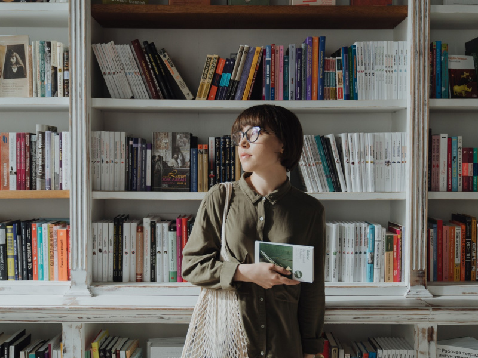
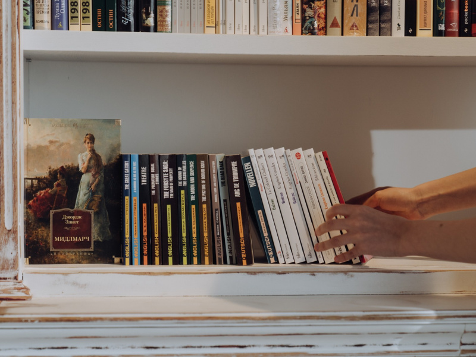
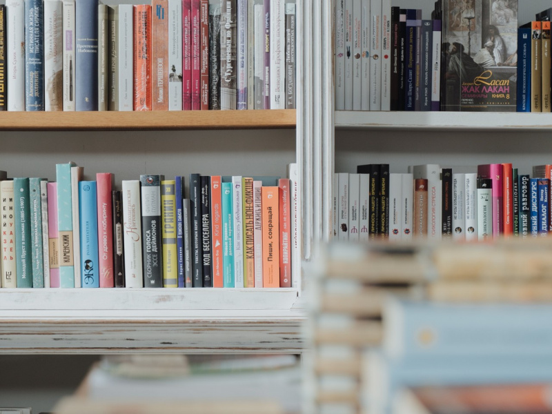
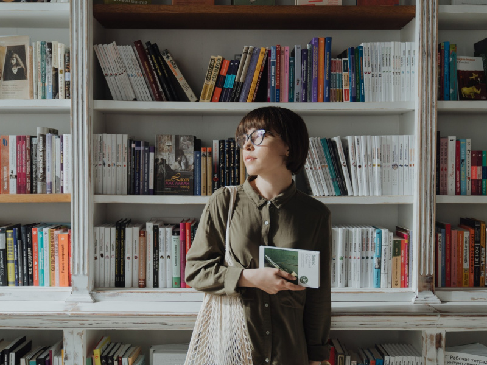
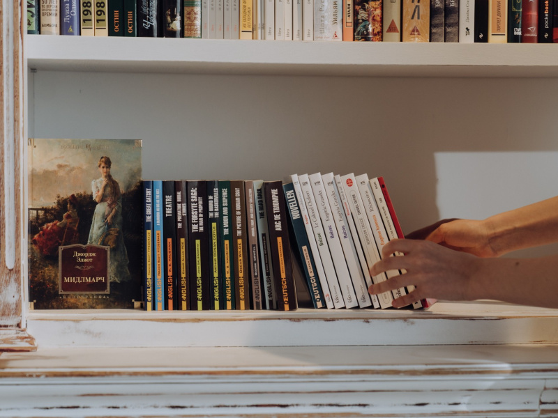
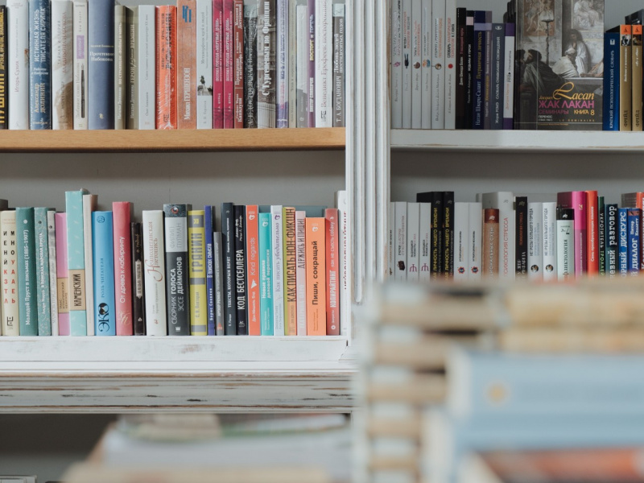

Икабог
Когда-то королевство Корникопия было самым богатым и счастливым в мире. Король славился невообразимо красивыми усами. Кондитеры, колбасники, сыровары и виноделы изобретали такие вкусные лакомства и напитки, что те, кому посчастливилось их отведать, плакали от счастья. Страна процветала, народ радовался. Всё бы хорошо, но в туманном, мрачном Смурланде, расположенном на севере королевства, ходили слухи об Икабоге, страшном болотном чудовище. Никто не верил в существование монстра из детской сказки, пока однажды ночной кошмар не стал явью. Неужели сказочное чудовище одолеет короля и разрушит благополучие целого государства? Неужели сказка, рассказанная на ночь, обернётся для двух маленьких детей смертельно опасным приключением? Неужели надежда, правда и верная дружба смогут победить даже самую страшную беду?


 




